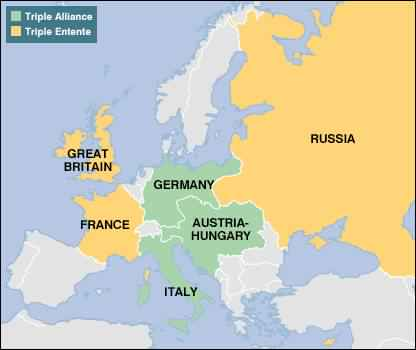
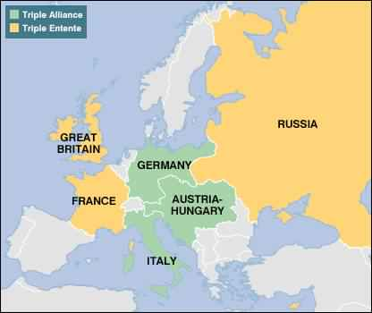

La sfârșitul secoluliu al XIX-lea, relațiile dintre Regatul Unit și Germania s-au îmbunătățit, dat fiind faptul că liderii politici precum premierul Lord Salisbury și cancelarul Bismarck erau conservatori realiști și aveau viziuni politice comune. Au existat mai multe propuneri pentru semnarea unui tratat între cele două puteri, dar nu s-a ajuns la nici un rezultat. Britanicii au preferat până la urmă să rămână cantonați în ceea ce era numit „splendida izolare”. Cu toate acestea, o serie de măsuri au dus la îmbunătățirea treptată a relațiilor dintre cele două puteri până în 1890, când Bismarck a fost demis de noul kaiser Wilhelm II. În 1896, împăratul german a provocat tensiuni între capitalele germană și britanică odată cu trimiterea „telegramei Kruger” în care îl felicita pe președintele bur al Transvaalului, Paul Kruger, pentru victoria împotriva raidului Jameson. Responsabilii politici din Berlin au reușit să îl împiedice pe kaiser să propună instituirea protectoratului german asupra Transvaalului. Germanii și-a exprimat public simpatia pentru buri în timpul celui de-al doilea război al burilor. În 1897, amiralul Alfred von Tirpitz a fost numit secretarul de stat pentru Marină și a început transformarea Marinei Germane dintr-o forță mică de apărare a litoralului într-o flotă care să pună probleme puterii navale britanice. Tirpitz milita pentru crearea „Flotei de risc” (Riskflotte). În condițiile existenței acestei forțe navale, ar fi devenit prea riscant pentru britanici să întreprindă orice acțiune fără să ia în considerație interesele germane, iar în final balanța internațională a puterii ar fi fost schimbată în mod decisiv în favoarea Berlinuli. În același timp, ministrul de externe german Bernhard von Bülow promova o nouă orientare a politicii externe – Weltpolitik (politica mondială). Aceasta era o abordare imperialistă a politicii externe prin care Germania reclama statutul de putere globală. Conservatorismul lui Bismarck a fost abandonat, pe măsură ce Germania se manifesta tot mai clar pe scena politică internațională. Ulterior, relațiile germano-britanice s-au deteriorat constant. Londra a început să vadă Berlinul ca o forță ostilă și și-a schimbat atitudinea față de Franța.
Principala modificare a politicii externe ruse a fost depărtarea de Germania și apropierea de Franța. Rusia nu fusese un prieten al Franței – erau încă vii amintirile Războiului din Crimeea și a invaziei lui Napoleon. Rusia considera Franța ca o sursă a subvesiunii și ridiculiza guvernarea slabă de la Paris. Franța, care se simțea încercuită de sitemul de alianțe conceput de Bismarck, a decis să îșî îmbunătățească relațiile cu Rusie. A început prin acorarea de împrumuturi, a continuat cu îmbunătățirea relațiilor comerciale, iar în 1890 a început să vândă rușilor vase militare. În acest timp, după Bismarck a fost îndepărtat din funcție în 1890,tratatele ruso-germane nu au fost reînoite. Ca urmare, bancherii germani au încetat să mai împrumute bani rușilor, care au ajuns să fie tot mai dependenți de Paris. În 1894 a fost semnat un tratat care prevedea că rușii urmau să îi ajute pe francezi dacă Franța ar fi fost atacată de Germania. Tratatul prevedea că, în cazul unui război cu Germania, Franța urma să mobilizeze imediat 1,3 milioane de soldați, iar Rusia între 700.000 și 800.000. Acest tratat stipula că dacă oricare dintre statele Triplei Alianțe (Germania, Austria, Italia) și-ar fi mobilizat rezervele pentru declanșarea unui război, Franța și Rusia trebuiau să își mobilizeze la rândul lor trupele de rezervă. Șeful Marelui stat major francez declara în 1892 în fața țarului Alexandru al III-lea „mobilizarea este declarația de război”. Mai mult, „să mobilizezi este să îi obligi pe vecinii noștri să facă același lucru”. Tocmai mobilizarea rezerviștilor a fost declanșatorul primei conflagrații mondiale din iulie 1914. Istoricul George F. Kennan a considerat că Rusia a fost principalul responsabil pentru prăbușirea politicii de alianțe în Europa și alunecării continentului spre război. Kennan dă vina pe slăbiciunile diplomației ruse, care era concentrată pe satisfacerea ambițiilor imperiale în Balcani. Spre deosebire de ruși, politica externă a lui Bismarck era concentrată pe prevenirea oricărui război major, chiar și în condițiile îmbunătățirii relațiilor franco-ruse. Imperiul Rus a părăsit Liga celor Trei Împărați creată de Bismark și a acceptat propunerea Franție pentru relații clădirea unor relații economice mai apropiate și pentru stabilirea unei alianțe militare.
Antanta a fost un bloc creat cu puţin timp înainte de primul război mondial şi format din Franţa, Imperiul Britanic şi Imperiul Rus. Romania adera si ea la Antanta in 1916. Blocul a fost victorios în Primul Război Mondial, cu excepţia Rusiei care a ieşit din război în 1917. Tripla Înţelegere/Antanta a fost formată în trei etape succesive. Prima etapă a fost cea a semnării unor acorduri franco-ruse (1891-1893), care prevedeau ajutor militar reciproc, în cazul în care vreuna dintre cele două ţări ar fi fost atacată de către Tripla Alianţă. Etapa a doua s-a consumat în anul 1904, când s-a semnat acordul anglo-francez numit Antanta Cordială, iar etapa a treia a constat în acordul anglo-rus, din anul 1907, prin care cele două ţări şi-au delimitat sferele de influenţă în Asia, făcând posibile viitoare colaborări politico-militare în Europa.
Tripla Alianță sau Puterile Centrale, cum mai este cunoscută, a fost încheiată între Germania, Austro-Ungaria și Italia, astfel luând naștere una dintre cele mai faimoase alianțe din întreaga istorie. Alianța a fost încheiată la inițiativa cancelarului Otto von Bismarck (“cancelarul de fier” al Germaniei), fiind, inițial, una de ordin defensiv, adică doar în cazul în care Franța ar fi atacat pe unul din membrii acesteia, ceilalți ar fi fost nevoiți să intervină și să declare război Franței. La baza acestei alianțe stă tratatul secret negociat de von Bismarck cu Austro-Ungaria în 1879, care sporea puterea în zonă a celor două state. Austro-Ungaria câștiga un aliat puternic în lupta de rezistență dusă împotriva expansionismului rusesc, iar Germania devenea și mai puternică în cadrul eventualelor conflicte cu Franța, refăcută după încheierea războiului din 1870-1871. Italia avea, în acest timp, probleme mari în Nordul Africii, unde Franța ocupa Tunisia. Imediat, ministrul afacerilor străine îl contactează pe Bismarck, propunându-i o alianță menită să neutralizeze Franța în Europa. Bismarck îi răspunde acestuia că drumul spre Berlin trece pe la Viena, astfel luând naștere, în mai 1882, Tripla Alianță. În cazul în care vreuna dintre părțile semnatare declara război oricărei alte țări, ceilalți membri își declarau neutralitatea și nu participau la război. România aderă la această alianță în anul 13 octombrie 1883.